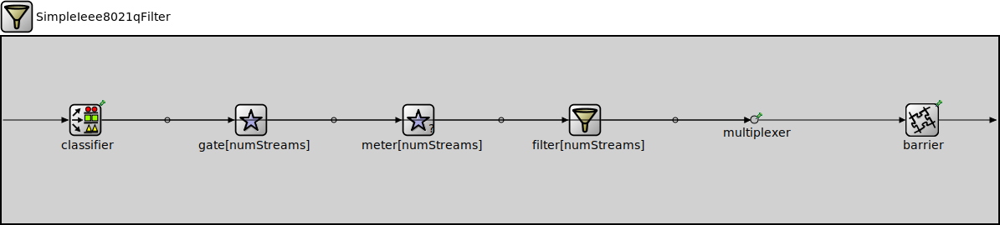

Package: inet.linklayer.ieee8021q
SimpleIeee8021qFilter
compound moduleThis module implements a simplified version of the IEEE 802.1Q per-stream filtering and policing. Each filtered stream has its own path where metering and filtering happens independently of any other stream.
Usage diagram
The following diagram shows usage relationships between types. Unresolved types are missing from the diagram.
Inheritance diagram
The following diagram shows inheritance relationships for this type. Unresolved types are missing from the diagram.
Parameters
| Name | Type | Default value | Description |
|---|---|---|---|
| numStreams | int | 0 |
number of different streams to filter for |
| hasDefaultPath | bool | true |
specifies if the non-filtered direct path should exist |
| startY | int | hasDefaultPath ? 200 : 100 |
Properties
| Name | Value | Description |
|---|---|---|
| display | i=block/filter |
Gates
| Name | Direction | Size | Description |
|---|---|---|---|
| in | input | ||
| out | output |
Unassigned submodule parameters
| Name | Type | Default value | Description |
|---|---|---|---|
| multiplexer.displayStringTextFormat | string | "passed %p pk (%l)" |
determines the text that is written on top of the submodule |
| multiplexer.forwardServiceRegistration | bool | true | |
| multiplexer.forwardProtocolRegistration | bool | true | |
| barrier.displayStringTextFormat | string | "passed %p pk (%l)" |
determines the text that is written on top of the submodule |
Source code
// // This module implements a simplified version of the IEEE 802.1Q per-stream // filtering and policing. Each filtered stream has its own path where metering // and filtering happens independently of any other stream. // module SimpleIeee8021qFilter like IPacketFilter { parameters: int numStreams = default(0); // number of different streams to filter for bool hasDefaultPath = default(true); // specifies if the non-filtered direct path should exist int startY = default(hasDefaultPath ? 200 : 100); @display("i=block/filter"); gates: input in; output out; submodules: classifier: <default("StreamClassifier")> like IPacketClassifier { gateIndexOffset = default(parent.hasDefaultPath ? 1 : 0); defaultGateIndex = default(parent.hasDefaultPath ? 0 : -1); @display("p=100,100"); } gate[numStreams]: <default("InteractiveGate")> like IPacketGate { @display("p=300,$startY,column,150"); } meter[numStreams]: <default("DualRateThreeColorMeter")> like IPacketMeter { @display("p=500,$startY,column,150"); } filter[numStreams]: <default("LabelFilter")> like IPacketFilter { labelFilter = default("green"); @display("p=700,$startY,column,150"); } multiplexer: PacketMultiplexer { @display("p=900,100"); } barrier: BackPressureBarrier { @display("p=1100,100"); } connections: in --> { @display("m=w"); } --> classifier.in; classifier.out++ --> multiplexer.in++ if hasDefaultPath; for i=0..numStreams-1 { classifier.out++ --> gate[i].in; gate[i].out --> meter[i].in; meter[i].out --> filter[i].in; filter[i].out --> multiplexer.in++; } multiplexer.out --> barrier.in; barrier.out --> { @display("m=e"); } --> out; }File: src/inet/linklayer/ieee8021q/SimpleIeee8021qFilter.ned
 This documentation is released under the Creative Commons license
This documentation is released under the Creative Commons license